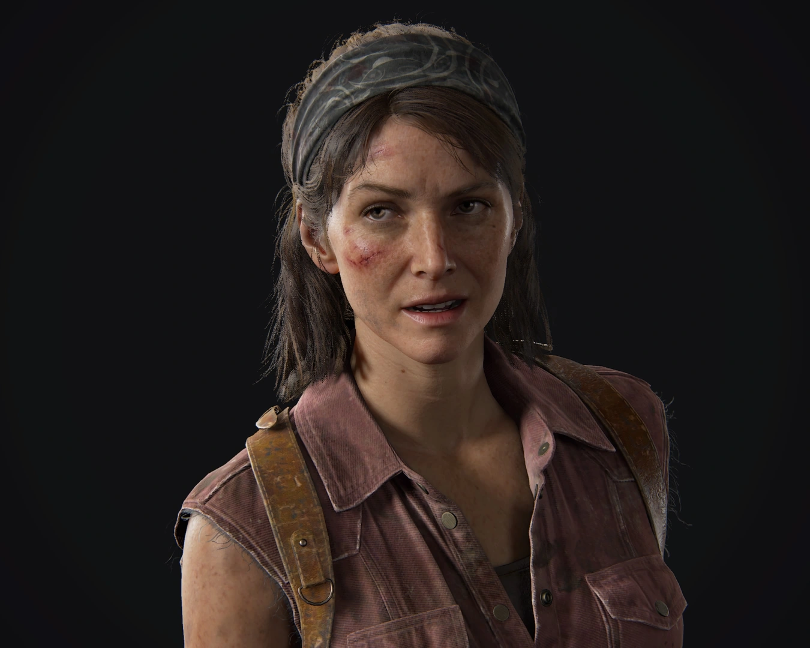
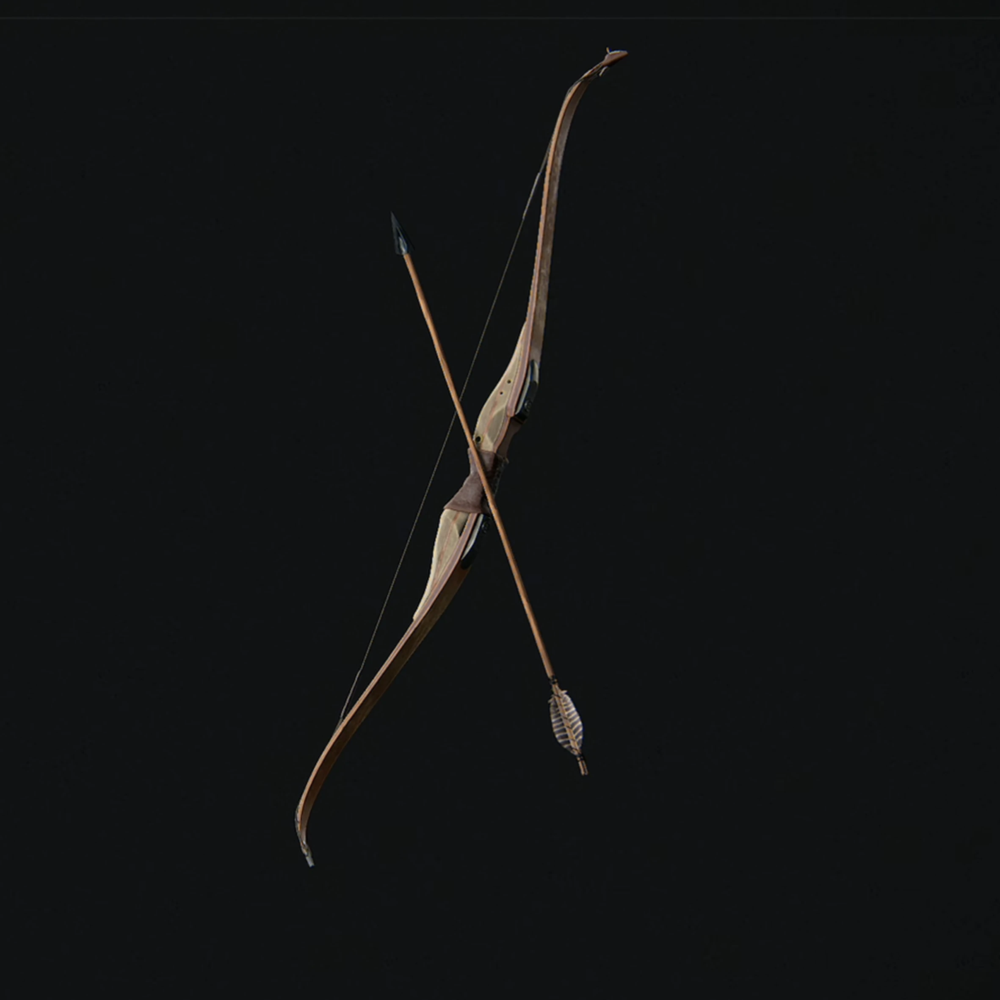

Bienvenidos a la página de información de The Last of Us
Temas principales:
- Supervivencia en un mundo post-apocalíptico
- Relaciones humanas y la importancia de la lealtad
- El impacto de la violencia y la moralidad
- El viaje emocional de los personajes
Personajes
En este universo nuestros personajes principales son claramente Joel y Ellie, pero a lo largo de la historia nos cruzamos con muchos otros personajes con unas historias increíbles, estos son algunos de ellos.
 |
Joel | Un hombre endurecido por la vida y la pérdida, que ha tenido que enfrentar decisiones difíciles. A lo largo de la historia, su carácter se ve marcado por el dolor de la tragedia, lo que lo convierte en un protector feroz de Ellie. Su evolución es uno de los puntos clave de la narrativa. |
 |
Ellie | Una joven valiente que ha crecido en un mundo peligroso, aprendiendo a luchar y sobrevivir desde temprana edad. A lo largo del juego, Ellie se enfrenta a momentos de vulnerabilidad y fortaleza, lo que la convierte en un personaje complejo y entrañable para los jugadores. |
|  | Tess | Aliada de Joel, Tess es una mujer fuerte y decidida que ha sido testigo de las brutalidades del mundo post-apocalíptico. Su relación con Joel es complicada pero profunda, y juega un papel crucial al principio de la historia. |
 |
Bill | Un superviviente desconfiado y paranoico que se ha aislado en su propia fortaleza. Aunque inicialmente parece un personaje difícil, su relación con Joel y Ellie revela más capas de su carácter y motivaciones, mostrando su lado más humano. |
 |
Tommy | El hermano menor de Joel, quien sigue un camino diferente al de su hermano. A lo largo de la historia, su relación con Joel se ve marcada por la distancia y el conflicto, pero también por la esperanza de un futuro mejor. |
Secciones del análisis:
- Introducción a los personajes principales
- Descripción de las armas y mecánicas del juego
- Los dilemas éticos dentro del universo de The Last of Us
- Impacto cultural y legado del juego
Armas en The Last of Us
Las armas son fundamentales en The Last of Us para sobrevivir en su mundo peligroso. Ya sea para defenderse de los infectados o de otros humanos, cada arma tiene características únicas.
 |
Pistola | La pistola es un arma rápida y eficaz para combates a corta distancia, ideal cuando las municiones son limitadas. Su versatilidad permite enfrentarse a enemigos con rapidez, pero su daño es relativamente bajo en comparación con otras armas. |
| Escopeta | Potente en corto alcance, perfecta para eliminar infectados y humanos con facilidad. Su gran poder de disparo puede desintegrar a los enemigos de un solo golpe, pero su lentitud al recargar y su efectividad limitada a corta distancia hacen que deba usarse con estrategia. | |
|  | Arco | Arma silenciosa y precisa, ideal para ataques a larga distancia. El arco permite cazar o eliminar enemigos sin atraer la atención de otros, aunque requiere habilidad para acertar a los blancos en movimiento. |
 |
Bombas | Explosivos que causan gran daño en área, útiles para eliminar grupos de enemigos o crear distracciones. Son esenciales en situaciones de alta presión, pero su uso debe ser cuidadosamente planeado para no dañar al propio jugador. |